Sans pour autant devenir iconoclaste et chercher systématiquement la contestation, en toute modestie réfléchir aux conséquences induites pour chacun par ce qui est appelé en France : transition énergétique puis en tirer des conclusions, cela n’a jamais fait de mal à personne… Encore que !
Nous avons vu dans un précédent METHODE qu’il ne faut surtout pas confondre puissance et production d’un générateur électrique ce qui est évidemment particulièrement applicable aux éoliennes et aux panneaux solaires, par excellence sources par nature aléatoires d’énergie suivant les conditions aérologiques locales du moment.
Si l’on s’en réfère aux directives gouvernementales en matière de transition énergétique, ces deux moyens de production d’énergie renouvelable devraient participer à sauver la France, voire dans la mesure où ils seraient construits à grande échelle, la planète toute entière d’un désastre climatique annoncé. Pourquoi pas mais l’on a pourtant quelque mal à y croire !.. D’autant que certains esprits sans doute maléfiques ont déjà abondamment démontré que non seulement il n’en sera rien mais que de plus, ces deux sources d’énergie pour ne parler que d’elles, n’ont strictement rien d’écologique. On cherche aussi en vain une étude convaincante quant à la quantité d’énergie consommée durant tout leur cycle de vie (1) par rapport à ce qu’elles vont réellement produire.
À tel point et pour mémoire, si l’on se réfère aux statistiques officielles, c’est-à-dire celles communiquées par EDF et RTE (Électricité De France et Réseau de Transport d’Électricité) on arrive à ce qui suit entre 2012 et 2018, soit déjà durant huit années :
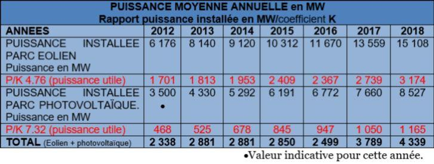Simplifions-nous la vie en adoptant un sigle et un coefficient, tels que ci-dessous explicités et suivant les différents tableaux ici reproduits.
Beaucoup de chiffres diront certains mais rassurons-nous tout de suite, rien de compliqué avec un peu d’attention… De plus, c’est excellent pour le cerveau et évite ainsi qu’il ne rouille prématurément ce qui entraîne toujours d’inutiles frais d’entretien !
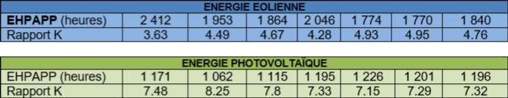EHPAPP : (Toujours pour simplifier, prononcer épape…). Un sigle de l’auteur de cet article mais qui reprend en partie des termes déjà régulièrement utilisés par EDF ou RTE. Il s’agit simplement de l’Equivalent en Heures de la Production Annuelle à Pleine Puissance, autrement dit du nombre annuel d’heures durant lequel le générateur (quel qu’il soit) doit fonctionner à pleine puissance pour produire la quantité d’électricité relevée.
L’EHPAPP s’obtient tout simplement en divisant la production annuelle d’énergie électrique par la puissance installée, évidemment en utilisant les mêmes unités.
Rapport K = Nombre d’heures annuelles d’une année civile, soit 8 760 heures divisée par l’EHPAPP.
Le résultat donne la valeur par laquelle il convient de diviser la puissance installée pour arriver à la puissance continue nécessaire pour produire la quantité d’énergie électrique relevée.
En résumé : d’un côté l’EHPAPP conduit au nombre d’heures, de l’autre côté le rapport K conduit à la puissance nécessaire, l’un comme l’autre pour fournir la quantité d’énergie relevée.
Exemple pour l’éolien en 2018 (dernière colonne du premier tableau) :
8760 h (année calendaire) : 1840 (EHPAPP) = 4.76.
Cela signifie que la puissance réelle continue pour produire 27.80 TW/h en 2018 (valeur communiquée par RTE) (2) est donc de 15 108 MW (puissance installée) : 4.76 = 3 174 MW.
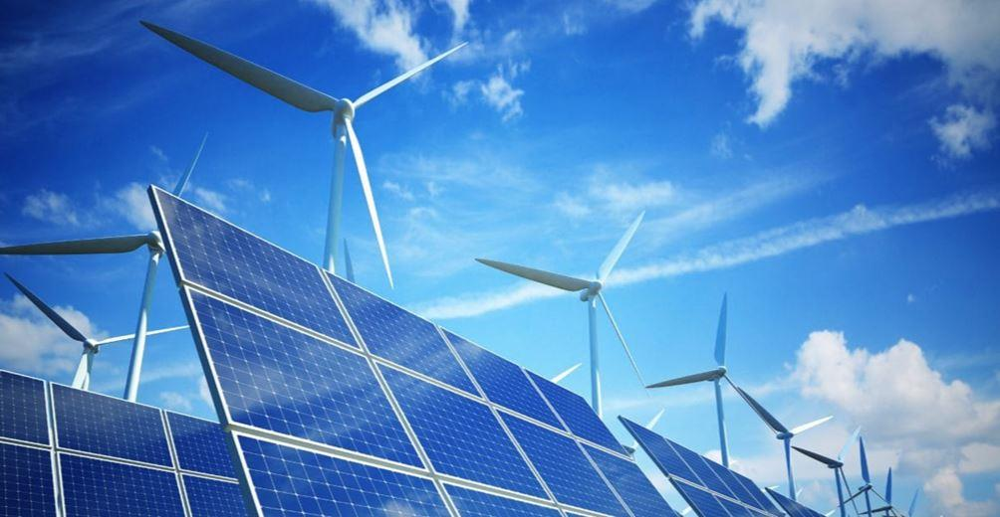En conséquence, on voit ainsi immédiatement que pour l’année 2018, il convient de diviser par 4.76 la puissance totale du parc éolien et par 7.32 cette du parc photovoltaïque pour trouver la puissance annuelle continue sur laquelle le consommateur peut compter, ce qui est peu.
Ce n’est évidemment pas la même chose que les effets d’annonce concernant la puissance totale installée comme si c’était elle que le consommateur pouvait considérer, ce qui serait totalement faux.
À nouveau, ceci montre immédiatement si encore nécessaire, que pour finir ces deux sources ne produisent pas grand-chose mais coûtent fort cher au contribuable et au consommateur…
Pour mémoire, l’observation du tableau ci-dessous est suffisante pour s’en convaincre.
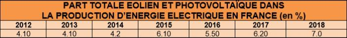Ceci étant rappelé, passons maintenant à un exercice pratique qui concerne l’habitat tel que désormais imposé au titre des économies d’énergie et donc de la fameuse transition énergétique.
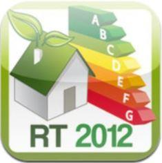Suivant les décrets datant de 2010 puis de 2012, les locaux d’habitation doivent désormais répondre à la RT 2012 (Réglementation Thermique éditée en 2012) qui impose au-delà de 100 m² habitables y compris l’épaisseur des murs, de disposer d’une très bonne étanchéité (3) et ainsi d’une ventilation hygrométrique comme d’au moins une source d’énergie renouvelable pour le chauffage.
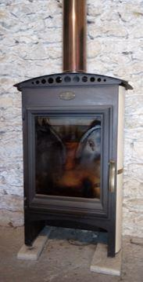 Poêle à buches de bois. Rendement énergétique > 80 %
Dans le cas où ce dernier répond d’un poêle à bois, celui-ci doit nécessairement être étanche ce qui implique de trouver l’air comburant à l’extérieur et non à l’intérieur du local considéré. Par conséquent, cela impose soit un conduit prenant l’air nécessaire à la combustion directement au dehors, soit d’un matériel idem mais équipé d’un double conduit de cheminée qui permet à la fois l’évacuation des fumées et l’admission d’air neuf qui se réchauffe au passage.
S’il existe toujours des appareils à bûches répondant à cette exigence, ceux à granules de bois (pellets) sont largement préconisés et utilisés dans le cas de la RT 2012.
Des aides de l’État sont même accordées sous forme de dégrèvement d’impôt pour ceux qui souhaitent passer à ce type de chauffage moderne et performant, au moins suivant ce qui est annoncé. Autrement dit, une forme de récupération des impôts versés par chaque citoyen, ce qu’il ne faut jamais oublier…
Toutefois, tant le système de ventilation hygrométrique que les fameux poêles à granules de bois (4) nécessitent de l’électricité pour fonctionner ce qui conduit immédiatement à s’interroger quant au bénéfice retiré par rapport aux économies d’énergie visées.
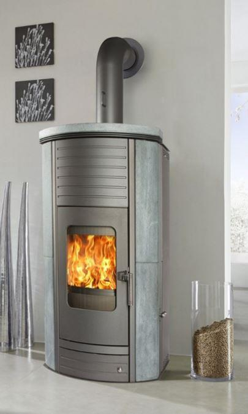Poêle à granules de bois
Si l’on considère qu’un tel appareil fonctionne 60 % du temps dans la partie au Nord de la Loire et 40 % dans la partie Sud et que l’on veuille bien admettre sensiblement la même population dans chaque partie du territoire, on arrive à ce qui suit :
En moyenne, la ventilation (4) pour les matériels en étant équipés, présente une puissance de » 50 W et 35 W pour le motoréducteur de la vis sans fin qui permet aux granulés d’alimenter le foyer, soit environ 85 W au total.
60 % dans la partie Nord et 40 % dans la partie Sud avec une population sensiblement similaire se traduit par 50 % du temps annuel de fonctionnement, soit 8760 heures : 2 = 4380 heures, ce qui représente une consommation de 85 W x 4380 h = 372 300 W/h = 372.30 kW/h (5 et 6).
Ventilation hygrométrique
La puissance utilisée, cette fois en moyenne continue, est d’environ 15 W ce qui se traduit par une consommation de 8760 heures x 15 W = 131 400 W/h = 131.40 kW/h
La somme des deux est ainsi de 372.30 + 131.40 = 503.70 kW/h ce qui représente déjà environ 10 % de la consommation électrique annuelle d’un foyer moyen de quatre personnes (» 5 000 kW/h), autrement dit, à peu près le double pour ce même foyer équipé d’éclairage à incandescence (ampoules électriques classiques, soit » 4 à 5 % de la facture d’électricité) comme c’était le cas avant cette dernière décennie.
Par pur machiavélisme mais néanmoins suivant les impératifs de la transition énergétique, imaginons qu’à terme cinq millions de logements, tous types confondus soient ainsi équipés, cela conduit alors à ce qui suit :
85 W (minimum) pour le poêle à pellets + 15 W pour la ventilation hygrométrique = 100 W, soit 0.10 kW x 5 x 106 (logements) = 500 000 kW = 500 MW lorsque les deux fonctionnent ensemble, soit à minima 50 % du temps et donc essentiellement en période froide.
Suivant le coefficient K (tableaux ci-dessus), en 2018 la puissance utile pour le parc éolien est de 15 708 MW : 4.76 (K) = 3 300 MW ce qui conduit à constater que durant 50 % de l’année la ventilation des poêles à pellets plus la ventilation hygrométrique représentent la consommation d’environ 15 % de cette source.
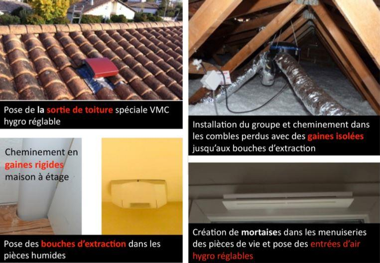Quant au solaire, suivant le même constat, on observe ce qui suit :
8 527 MW : 7.32 (coefficient K) = 1 165 MW utiles. Ventilation des poêles à pellets + ventilation hygrométrique représentent » 43 % pour cette source.
Naturellement, les esprits chagrins objecteront que l’on ne peut pas comparer cinq hypothétiques millions d’installations actuelles et futures répondant à la RT 2012 avec les statistiques de 2018 en matière de production électrique éolienne et photovoltaïque.
Effectivement mais d’une part, dès l’année à venir sera imposée la RT 2020 qui va se traduire par de nouvelles règles et vraisemblablement l’obligation d’installer des panneaux photovoltaïques ce qui signifie que dans le courant de la prochaine décennie, ce chiffre de 5 millions incluant la rénovation de locaux anciens sera certainement atteint sinon dépassé.
Comme vraisemblablement contre vents et marées la production d’énergie éolienne comme photovoltaïque poursuivra sa croissance, le pourcentage de consommation uniquement pour le fonctionnement des poêles à pellets et la ventilation hygrométrique baissera mais néanmoins, cette démonstration issue de statistiques officielles, même si l’on en conteste certains paramètres, montre tout de même à quel constat on arrive !..
Sans naturellement oublier que si pas d’électricité, pas de poêle à pellets non plus !
Quoi qu’il en soit, au nom de la transition énergétique, ces moyens de production d’électricité, particulièrement onéreux, aléatoires et qui n’ont strictement rien d’écologique sont et seront donc largement utilisés pour faire fonctionner deux appareils supplémentaires imposés au titre de règles d’habitation (RT 2012 et RT 2020), mesure précisément destinée à conduire vers des économies d’énergie...
Comprenne qui pourra !
Pourtant, ce n’est pas tout… L’usage de poêles à pellets se traduit en amont par une consommation d’énergie supplémentaire et une conséquence écologique non négligeable pour la forêt. En effet, lorsque l’on utilise un poêle à bûches, cela nécessite hormis l’abattage des arbres s’il y a lieu, un sciage à dimensions et un transport chez le vendeur, voire directement chez le consommateur comme c’est fréquemment le cas en campagne.
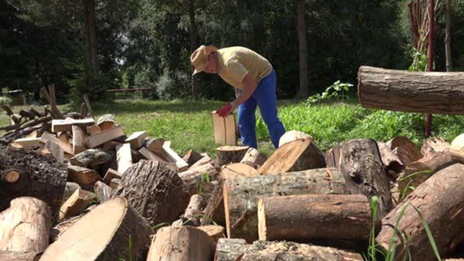Quant aux plus petits branchages, ils restent sur place ce qui permet une certaine régénération du sol et de limiter l’érosion si celui-ci est en pente (cas très fréquent).
Ensuite, le fonctionnement du poêle ne nécessite qu’un ramonage de la cheminée.
Dans le cas du poêle à pellets, tous les sous-produits d’abattage des arbres sont récupérés ce qui laisse le sol nu et par là favorise son érosion et donc son épuisement (7).
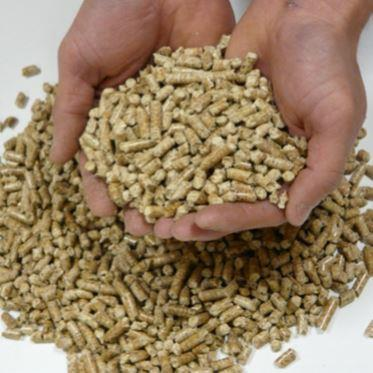Ensuite, il est nécessaire de les transporter vers l’usine de broyage et de conditionnement des pellets (granulés), opération qui implique de la consommation d’énergie puis un second transport chez le distributeur et enfin un troisième chez le consommateur.
Quant à l’achat des granulés de bois, à fourniture similaire d’énergie calorifique, ils coûtent nettement plus cher que les bûches (8).
Par ailleurs, un poêle à bûches de bonne qualité avec sa cheminée en acier inoxydable simple conduit pour l’évacuation des fumées, coûte de 800 à 1 800 € TTC et ne nécessite aucune installation particulière.
Ce n’est évidemment pas le cas pour le poêle à pellets pour lequel, toujours au titre de la RT 2012, il est nécessaire d’installer deux conduits distincts puisque l’air nécessaire à la combustion ne peut pas être pris dans le local où il est installé (9).
Quant au coût de l’installation pour un pavillon de 115 m² habitables, comprenant le poêle et la cheminée, il faut compter entre 4 000 et 6 000 € TTC ce qui n’est pas la même chose que précédemment !..
Enfin, ne pas négliger l’entretien et les éventuelles pannes (électronique, motoréducteur de la vis d’alimentation en pellets, ventilateurs, etc.).
Ici encore et sans être iconoclaste, il apparaît rapidement que l’écologie via la transition énergétique a encore frappé mais à nouveau directement dans le porte-monnaie des propriétaires des lieux considérés.
Ne vaudrait-il pas mieux conserver pour ceux qui le souhaitent, un bon poêle à buches dont le rendement approche voire dépasse 80 % et ouvrir les fenêtres pour aérer comme avant, ce qui est d’ailleurs toujours conseillé, avec bon sens, par le corps médical ?
Cependant, cela ferait-il le bonheur des fabricants, des distributeurs et in fine des financiers chez lesquels le consommateur va s’endetter pour installer ces matériels puis les entretenir ? Il n’est pas encore interdit de se poser la question…
Le local concerné (maison, appartement…) super isolé devient ainsi, suivant certains utilisateurs, un véritable ²Tupperware² car par nature, l’on n’y ouvre jamais les fenêtres, excellente mesure pour favoriser le développement des parasites. A titre indicatif, cette étanchéité imposée est désormais source d’humidité si bien que des sociétés se sont spécialisées dans son traitement !.. Il n’y a pas de petites affaires…
Poursuivons en abordant un autre matériel d’application obligatoire, autrement dit : la production d’eau chaude à usage domestique.
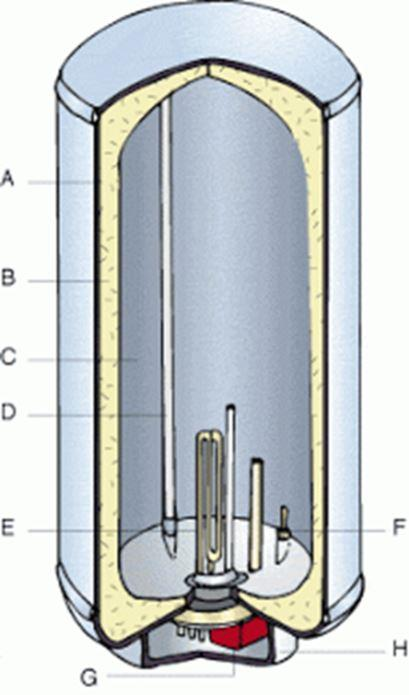Avant l’application de la RT 2012, il était d’usage de disposer d’un ballon équipé de résistances électriques d’une puissance variant couramment de 1 à 2.5 kW, un thermostat assurant leur alimentation suivant la température de l’eau.
Pour un foyer de quatre personnes, d’un prix moyen variant de 250 à 500 € en fonction de la qualité et du volume, ces appareils ne demandent aucun entretien et leur durée de vie, suivant la teneur en sels pouvant être séquestrés (10) s’étend globalement de 10 à 20 années.
Toutefois, malgré leur simplicité, on peut leur reprocher d’être insuffisamment isolés ce qui induit des pertes thermiques dans le local où ils sont installés et donc une consommation parasite d’énergie électrique, soit de 15 à 20 % supplémentaires.
Toujours au titre des économies d’énergie, la RT 2012 impose désormais des ballons thermodynamiques dont l’alimentation en eau chaude provient d’un serpentin intérieur alimenté par une pompe à chaleur et suivant la température environnante, une résistance électrique prend le relai (voir fonctionnement de l’appareil avec les documents des constructeurs).
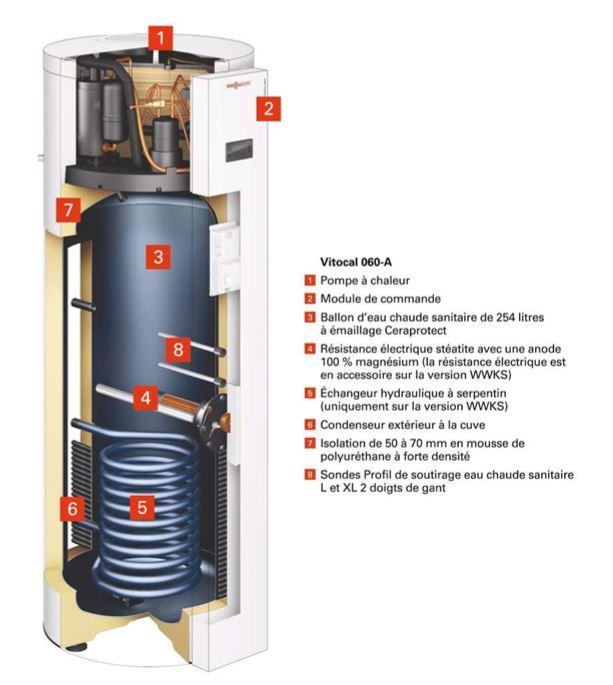Naturellement, le prix global de cette installation n’est pas le même que précédemment puisqu’il faut compter pour le même pavillon de 115 m² habitables entre 1 500 et 2 000 € TTC hors installation et suivant la capacité demandée comme l’environnement.
Pour un tel logement qui n’a rien d’extraordinaire, si l’on additionne seulement l’installation du poêle à pellets de bois et celle du chauffe-eau thermodynamique, on arrive ainsi allègrement entre 5 500 et 8 000 € TTC ce qui n’est déjà pas rien, ceci au lieu de 850 à 2 000 € TTC auparavant, soit un coefficient multiplicateur variant de 4 à 6.5, uniquement pour cela…
Sachant aussi que les constructeurs de pompes à chaleur sont majoritairement à capitaux étrangers dont en particulier d’origine USA, voire de Chine mais n’en est-il pas de même pour les éoliennes et les panneaux solaires ?..
Ici encore, plutôt qu’une nouvelle usine à gaz, aurait-il été plus sage de simplement exiger des fabricants une meilleure isolation thermique des chauffe-eau classiques ?...
Ajoutons également le bruit parasite de la pompe à chaleur, lequel dans certains cas peut s’additionner avec celui du poêle à pellets sans oublier lorsque l’eau de ville est très chargée en sels, le comportement du serpentin placé dans le ballon d’eau chaude.
Bien entendu, dans ce cas, pour quelques milliers d’Euros supplémentaires il y a toujours la possibilité d’acquérir un déminéraliseur qui fera, lui aussi, l’objet d’une nouvelle facture…
Quant aux réelles économies d’énergie incluant la consommation électrique nécessaire, elles restent à prouver d’autant que l’on cherche toujours où sont les études concernant l’analyse de la valeur, appelée également cycle de vie de A à Z, sans rien oublier... Une revue de consommateurs estime le retour sur investissement à cinq années ce qui paraît tout de même un peu juste, surtout pour les foyers comportant peu de personnes car l’amortissement financier du matériel et de son installation deviennent plus difficiles.
Économies d’énergie, vraiment ?...
L’accent est donc désormais mis sur les économies d’énergie dont évidemment d’électricité mais qui pourrait s’en plaindre ?.. Pour cela, le chauffage des locaux sera certainement de plus en plus issu de pompes à chaleur dont la grande majorité est de type air-air. Autrement dit, dans la mesure où ces matériels présentent un excellent rendement dans une certaine gamme de température extérieure, dès que celle-ci descend en dessous de -2 à -5°C d’autant plus en cas de forte humidité (brouillard), il devient nécessaire d’envisager un chauffage d’appoint mais ce n’est pas tout…
L’été, il est évidemment bon de disposer d’un système qui, grâce à sa réversibilité, permet cette fois de bénéficier d’une climatisation mais évidemment, ce n’est pas gratuit en termes de consommation. Or, on constate, particulièrement dans les pays chauds que cette dernière est justement à l’origine de nombreuses coupures d’électricité ce qui conduit à augmenter la puissance des centrales thermiques (Afrique, etc.).
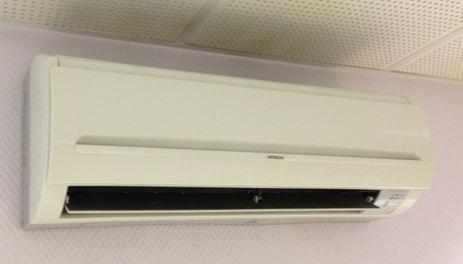
Groupe extérieur de climatisation et cassette intérieur de diffusion
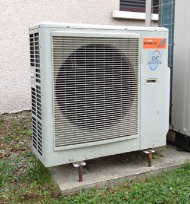On pourrait donc penser qu’en France et plus largement en Europe, l’éolien comme le photovoltaïque vont participer à cette production d’électricité.
Pour ce point, l’été 2019 fut un très bon exemple d’incapacité.
D’une part, le peu de vent en juin, juillet et août a conduit l’éolien vers une très faible production d’énergie électrique (quelques pour cents du parc installé).
D’autre part, même si l’ensoleillement fut excellent, ce n’est pas avec 1.5% du mix énergétique électrique de la France que le photovoltaïque a pu participer à grand-chose.
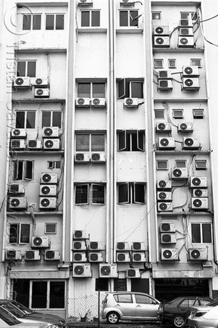Enfin, la multiplication des pompes à chaleur à l’extérieur des locaux entraîne désormais des conflits entre voisins et même des actions auprès des tribunaux, naturellement, sans oublier dans la facture finale leur entretien comme la durée de vie de ces matériels (11).
A l’été 2019, une fois de plus et malgré tout le mal que l’on peut lire à leur sujet, il aura largement fallu compter sur les centrales nucléaires (12) pour assurer une bonne partie du confort des habitants sachant que l’hydraulique était également déficitaire en eau…
En l’état, il y a ici la meilleure démonstration naturelle des lacunes de l’éolien et dans une certaine mesure du photovoltaïque pour une production d’énergie électrique de masse.
Conclusion
In fine, cette transition énergétique imposée aux Français ferait-elle d’abord les affaires des USA, des Chinois, des Espagnols et autres Canadiens sans oublier les compagnies pétrolières, parfaitement incontournables ? Par ailleurs, il ne suffit pas davantage d’affirmer des choses quant aux économies financières que réalisera à terme le consommateur car elles ne tiennent généralement pas compte de tous les postes dont l’entretien (contrats et autres) comme la pérennité de ces systèmes.
Elles s’avèrent malheureusement n’être souvent que des arguments commerciaux, tels les panneaux solaires et la revente d’énergie à EDF qui devait faire gagner de l’argent aux acquéreurs... À ce jour, combien sont-ils exactement et pour quelles sommes ?
Il n’est évidemment pas contestable d’engager les efforts nécessaires pour limiter la consommation d’énergie, bien au contraire mais d’ici à multiplier les matériels qu’à terme il faudra entretenir puis remplacer et enfin recycler pour ce qui peut l’être, c’est une autre histoire.
Naturellement, sans oublier, par voie de conséquence l’endettement que tout cela entraîne. Si l’État estime entre 4 et 5 % le surcout moyen de la RT 2012, l’ADEME (13) le situe plutôt vers 15 % ce qui paraît nettement plus réaliste.
Une fois de plus, encore faudrait-il approfondir les éléments ayant prévalu à ces valeurs sans compter que de nombreux isolants thermiques utilisés pour la construction d’habitations (polystyrène, PVC pour les bâtis de fenêtres, etc.) sont à base de… pétrole !
Quoi qu’il en soit, 15 % de plus pour un pavillon de 150 000 €, dans un premier temps cela fait tout de même 22 500 € supplémentaires… On voit donc mal comment récupérer cela en quelques années, sans oublier de faire des prières pour qu’il n’y ait aucun aléas…
Pourtant, le bon sens voudrait au contraire, que l’on cherche à simplifier les choses ce qui est parfaitement possible. L’argent ainsi économisé par les propriétaires pouvant être utilisé à d’autres projets ce qui limiterait le recours aux circuits financiers comme à ce système de subventions d’État qui n’est en réalité qu’un transfert d’impôt et une nouvelle dépendance des individus.
À force de tout compliquer, il n’est pas trop difficile de constater qu’en réalité l’humanité va vers une civilisation de déchets, qu’ils soient à terre comme en mer. Ne voit-on d’ailleurs pas certains pays comme les Philippines qui nous les renvoient via des transports par mer qui ont, eux aussi, un coût financier et écologique non négligeable car les moyens de transport ne fonctionnent généralement pas à l’eau minérale (14).
Tout ceci n’est évidemment pas gratuit et revient à participer à l’endettement puis à épuisement financier d’une partie de la population alors que d’autres solutions plus simples existent. Il n’est sans doute pas utile d’imaginer puis d’imposer des usines à gaz fort onéreuses à l’achat puis à terme. Pas plus qu’indirectement d’en venir à surveiller la vie privée via les nouveaux compteurs électriques Linky comme vraisemblablement à terme leur imposer un mode de consommation sous peine de pénalités ou autres contraintes. Pourtant, la raison d’être, à moins de faire preuve de la meilleure naïveté, relève également de la transition énergétique.
Dans ce qui précède, il ne s’agit évidemment pas de jeter l’anathème sur tel ou tel matériel. Toutefois, il faut tout de même reconnaître que sous bien des aspects, l’écologie, mot pris au sens large, telle qu’actuellement vécue apparaît trop souvent comme relever d’une géniale idée manifestement de plus en plus opportune pour essayer de faire fonctionner tant bien que mal un système économique et social qui apparaît sur de nombreux points à bout de souffle.
Cependant, ceci revient à épuiser financièrement ceux qui disposent encore de quelques moyens en ce sens, autrement dit, la classe dite moyenne.
Quant à l’utilisateur, il oublie en passant que le recyclage n’est pas gratuit, que ce soit sous forme d’énergie, de finance ou tout simplement pour l’environnement, lieu final que l’on aborde pas trop.
La vraie écologie ne consiste pas à multiplier les matériels, généralement sophistiqués, onéreux à l’achat comme à l’entretien sans oublier les taxes en tous genres mais en commençant déjà par une prise de conscience dès l’école puis en recherchant systématiquement les systèmes les plus simples et les plus naturels, lesquels soyons-en certains, existent depuis longtemps.
Ceci, à n’en point douter, est une autre histoire pour laquelle nous aurons certainement l’occasion de revenir dans un prochain article de METHODE.
J-M. T.
1. Le cycle de vie, appelé également analyse de la valeur, comprend toute la chaine d’élaboration d’un produit, depuis le prélèvement dans la nature via la mine jusqu’à sa destruction complète, son recyclage et les déchets ultimes, y compris la quantité comme la qualité de l’énergie consommée. Ce n’est donc pas une affaire simple…
2. Éléments d’accès public communiqués par RTE qui était une filiale à 100% d’EDF mais son capital fut ouvert à concurrence de 49.9 % à la Caisse des Dépôts et des Consignations et à CNP Assurances le 31 mars 2017. RTE reste néanmoins sous contrôle d’EDF à 50.10 % € donc indirectement de l’État français.
3. Le label RT 2012 est conditionné par une épreuve d’étanchéité à l’air du local à la pression de 50 Pa (0.0005 bar). Toutefois, cette réglementation s’applique en partie suivant la surface des locaux d’habitation, soit moins de 50 m² et moins de 100 m² habitables.
4. Certains matériels n’en possèdent pas ce qui conduit à une diffusion différente de la chaleur. Toutefois, la majorité de ces poêles est ventilée.
5. Autrement dit, 1 MW/h = une puissance de 1 MW durant une heure et 1 kW/h = une puissance de 1 kW durant une heure. Idem pour les autres unités dont le Gigawatt/h et le Terawatt/h. Pour calculer la consommation ou la production d’énergie électrique, il suffit simplement de multiplier la puissance fournie ou consommée par le nombre d’heures de fonctionnement ou d’utilisation à cette puissance.
6. En réalité, ces poêles comprennent généralement trois moteurs, soit : un ventilateur d’amenée d’air neuf, un ventilateur d’extraction des fumées et un motoréducteur pour la vis sans fin d’écoulement des pellets vers le foyer. La puissance totale de 85 W présentement retenue est minimale.
7. Contrairement à une idée reçue, les terres sur lesquelles poussent les forêts sont généralement fragiles et de faible épaisseur en humus ce qui implique de les protéger et non de les mettre à nu comme un champ de culture de céréales. Cf. incendies.
8. Suivant le constructeur français GODIN (poêles et cuisinières), 0.043 €/kW pour le poêle à bûches de bois et 0.071 €/kW pour les granulés en vrac, soit 1.65 fois plus (statistique datant de 2017 issue d’une source ADEME/EDF).
9. Un double conduit (tuyauteries concentriques) constitue toujours une bonne solution car dans tous les cas l’air comburant est ainsi réchauffé par les fumées, apportant des calories que le combustible (bois) n’aura pas à fournir, d’où économie réelle.
10. La séquestration de sels contenus dans l’eau est bien connue de chacun par les dépôts sur les parois du contenant (tuyauteries, casseroles, bouilloires, sanitaires etc.). Il s’agit de carbonate de calcium, de magnésium, voire de silice sous différentes formes. C’est ce qui conduit souvent à installer un système de déminéralisation partielle.
11. La durée de vie d’une pompe à chaleur de bonne qualité est normalement d’une vingtaine d’années sans nécessiter d’entretien particulier.
12. Malgré plusieurs tranches en arrêt pour entretien et/ou à puissance limitée par suite de la température de l’eau de refroidissement des condenseurs des turbines à vapeur pour celles installées sans réfrigérants atmosphériques en bordure de fleuves.
13. ADEME : Agence De l’Environnement et de la Maîtrise de l’Energie.
14. Se rappeler l’affaire en 2006 de la décharge chimique en Côte d’Ivoire (Abidjan) qui fit près de 9 000 victimes plus ou moins atteintes mais également les différents dépotoirs dans les fonds marins dont à ce jour, nombre reste inconnu. Sans naturellement aborder l’immense surface de déchets qui flottent au large des côtes bordant certains pays asiatiques sous lesquelles la faune marine aurait quasiment disparu.
Partager cette page